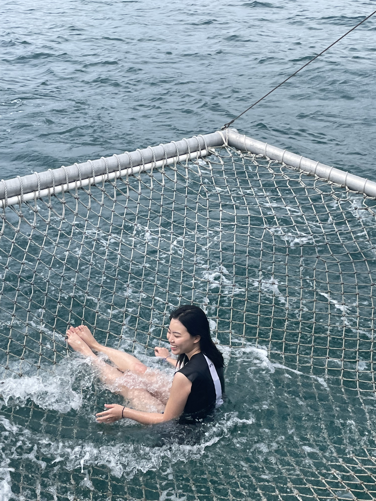
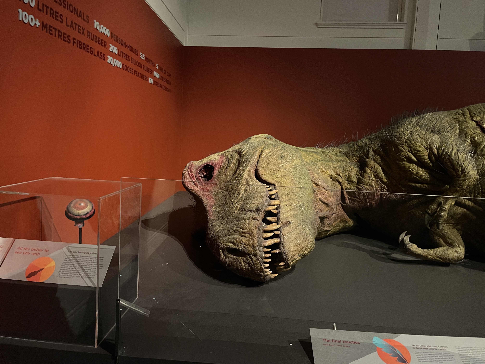
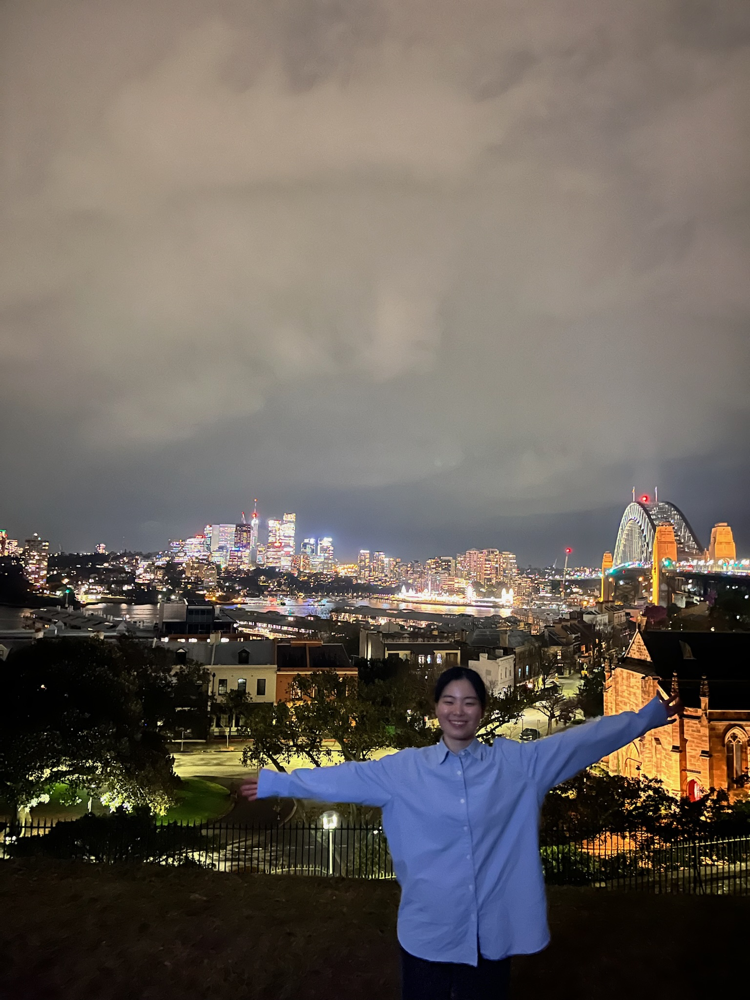
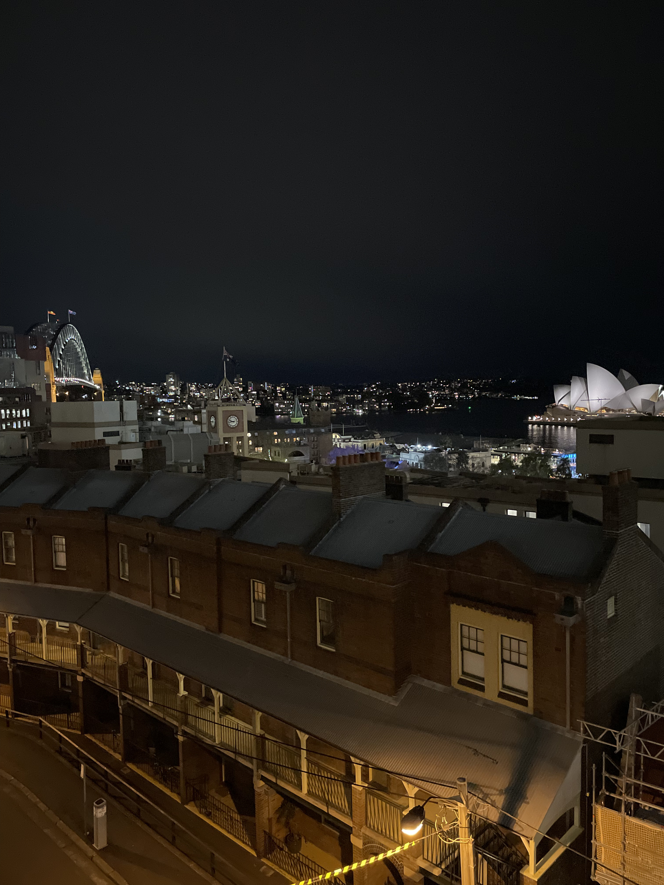
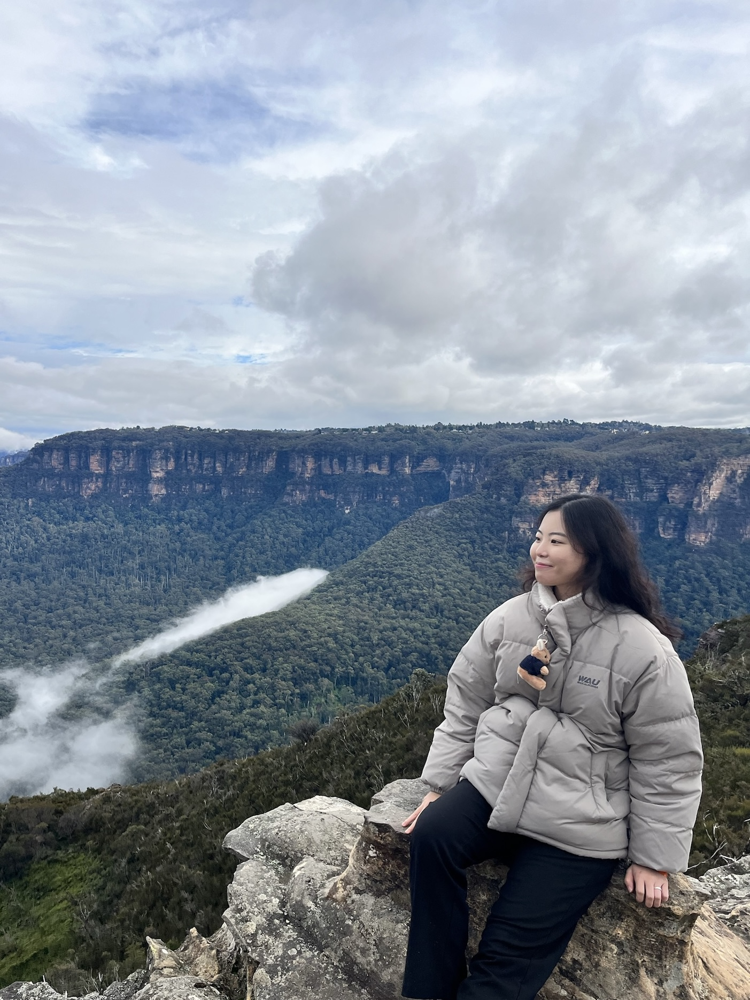
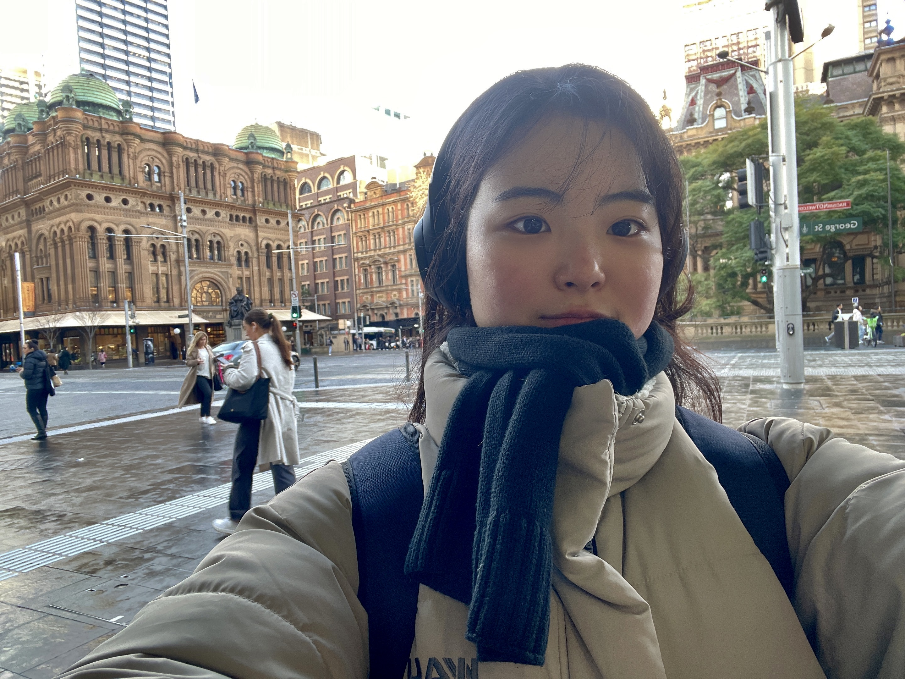
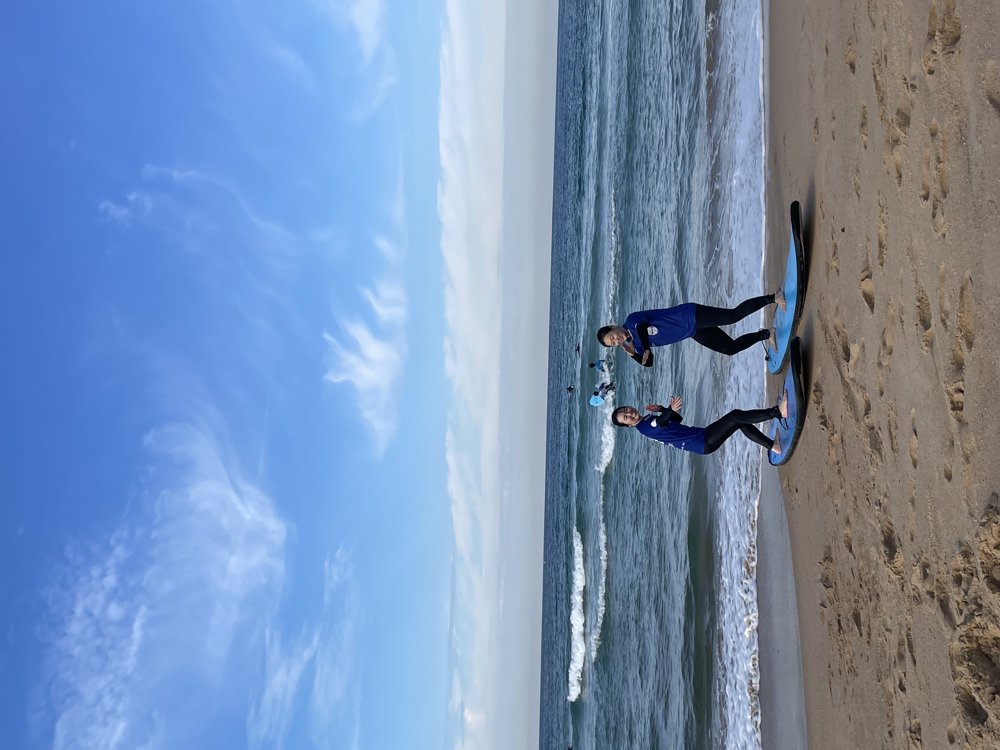
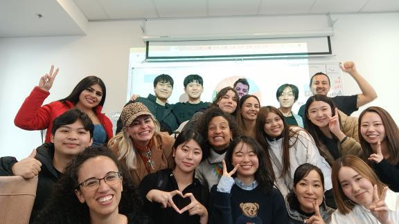
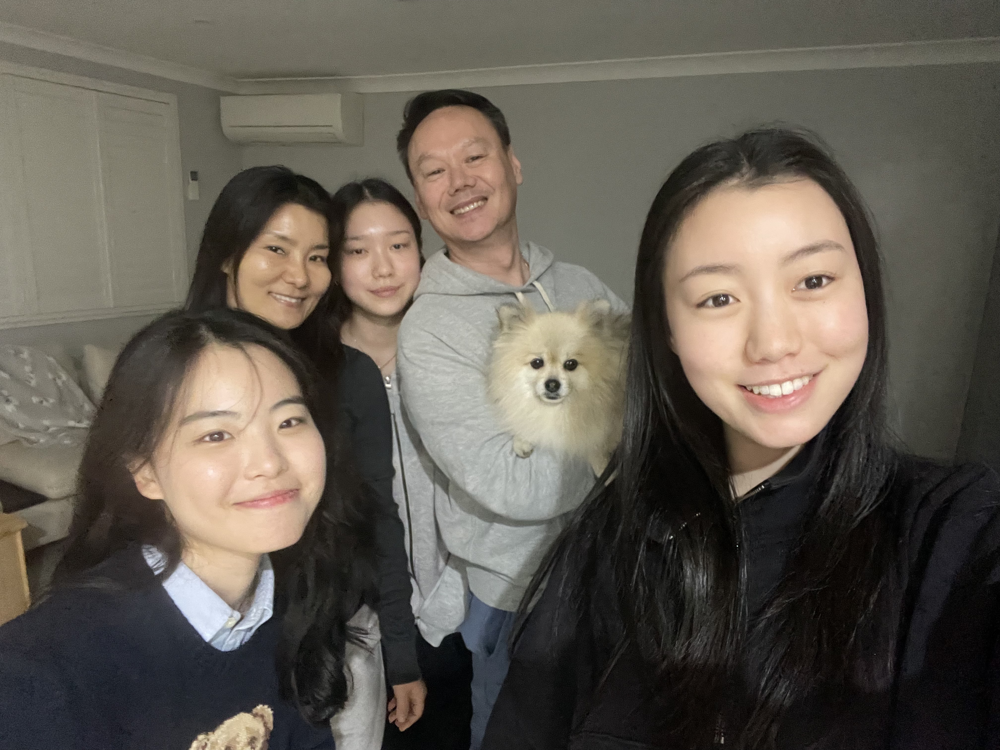

헤일리 🩶
자기소개 👋
안녕하세요, 헤일리입니다. 저는 매년 하나의 목표를 세우는데요,
올해의 목표는 '나에게 다정하기'입니다.
남한테는 칭찬을 잘하는데 스스로한테는 너무 엄격해서
부족한 점이 계속 보이고 걱정도 쓸데없이 많아지더라고요 😭
그래서 이번년도에는 부족한 나를 인정하고, 스스로를 챙기는 활동을 해보려고 노력 중입니다!
1월1일부터 집에 오는 나를 위해 이불 개기를 하고 있고요,
다음 달에는 매일 1개의 칭찬을 스스로에게 해주기를 해보려고 합니다!
나만의 갤러리 🏞️









나를 울린 인생 뭐뭐 💦
인생 가수 🎤
제가 가장 좋아하는 가수는 빌리 아일리쉬입니다~ 빌리 아일리쉬는 01년생으로 저랑 동갑이에요. 가장 좋아하는 노래는 'birds of a feather'이에요. 빌리 아일리쉬 특유의 우울한 노래와 허스키한 목소리가 너무 좋아요~
인생 작품 📺

제가 가장 좋아하는 드라마는 지니 & 조지아입니다. 백인 엄마와 흑인 딸 사이에서 일어나는 갈등과 범죄자인 엄마를 지켜보며 성장하는 드라마인데, 감동 눈물 좔좔~입니다. 사회적 이슈를 엄청 다루는 드라마라서, 도파민에 중독된 데일리 조 친구들에게 추천합니다~
감상평 🍵
-
 방문자
대학생 때 읽었던 모모가 문득 생각나서 다시 펼쳐봤는데, 글쓴이님 말씀처럼 정말 지금 보니까 완전 다르게 다가오더라구요! 회색 신사들이 들려주는 '시간 절약'이란 말이 마치 요즘 유튜브에서 흔히 보이는 '갓생 살기' 영상들 같아서 씁쓸하게 웃었습니다 ㅎㅎ 광안리 해변 이야기는 정말 이 글의 하이라이트인 것 같아요. 저도 이제는 가끔은 멍때리는 시간을 가져야겠어요 :)
방문자
대학생 때 읽었던 모모가 문득 생각나서 다시 펼쳐봤는데, 글쓴이님 말씀처럼 정말 지금 보니까 완전 다르게 다가오더라구요! 회색 신사들이 들려주는 '시간 절약'이란 말이 마치 요즘 유튜브에서 흔히 보이는 '갓생 살기' 영상들 같아서 씁쓸하게 웃었습니다 ㅎㅎ 광안리 해변 이야기는 정말 이 글의 하이라이트인 것 같아요. 저도 이제는 가끔은 멍때리는 시간을 가져야겠어요 :) -
방문자
와... 크론이라는 닉네임의 의미를 읽고 푸지 이발사가 딱 떠올랐어요. 저도 회사에서 30분 단위로 시간 쪼개서 일정 관리하다가 얼마 전에 번아웃 왔거든요 😅 시간을 아낀다고 오히려 삶을 놓치고 있었던 것 같아서 마음이 찡했습니다. 글쓴이님 글 덕분에 오늘은 퇴근하고 동네 한 바퀴 돌아야겠어요~
-
방문자
이 글 읽으면서 계속 고개를 끄덕였네요 👍 특히 자기계발서 이야기... 저도 요즘 '갓생살기' 영상 보면서 조급해졌었는데, 모모 다시 읽어봐야겠어요! 시간은 아끼는 게 아니라 느끼는 거라는 말에 완전 공감입니다. 저도 이제는 하루에 한 번은 커피 마시면서 창밖 구경하기로 했어요 ☕️